CATCHHOLE · GH215Clear Blue로 바꾼 후보 검토 화면
실제 React 컴포넌트의 캡처입니다. 검토 화면과 함께 랜딩, 공개 체험, 첫 업로드 안내를 같은 디자인으로 맞췄습니다. 원래 시안과 팀 공유 문서는 그대로 보존했습니다.
사진을 누르면 원래 크기로 볼 수 있습니다. 43개 상태 대응표와 검증 내역 · 작업 이슈
같은 회차의 수정·제외를 그대로 확정10월 3일 · 실제 로컬 Spring/H2 서버 · 한 후보 수정 → 다른 후보 제외 → 새로고침 → 남은 2개 확정, 전체 AI 재비교 없음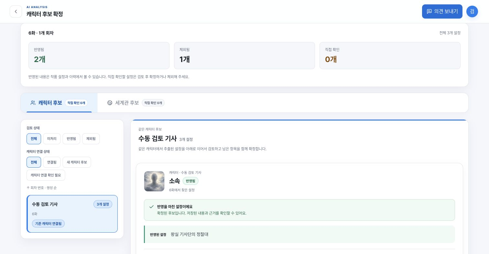
확정 전에는 언제든 다시 선택후속 수정 · 목 API와 실제 컴포넌트 · 저장·새로고침 뒤에도 포함/별도 선택 유지, 비교 본문 높이 정렬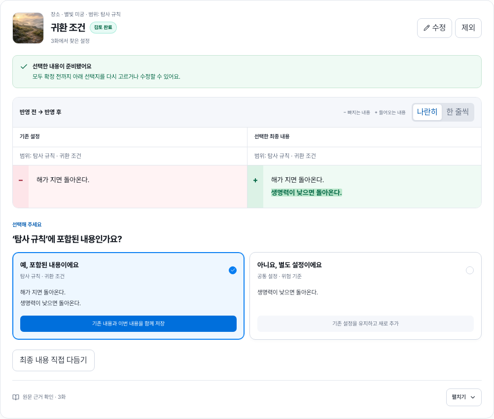
비교를 마치지 못했다면 무엇을 확인하나요?후속 수정 · case 09의 목 API 예시 · 먼저 내용과 선택지를 표시하고 필요한 경우에만 수정 폼 열기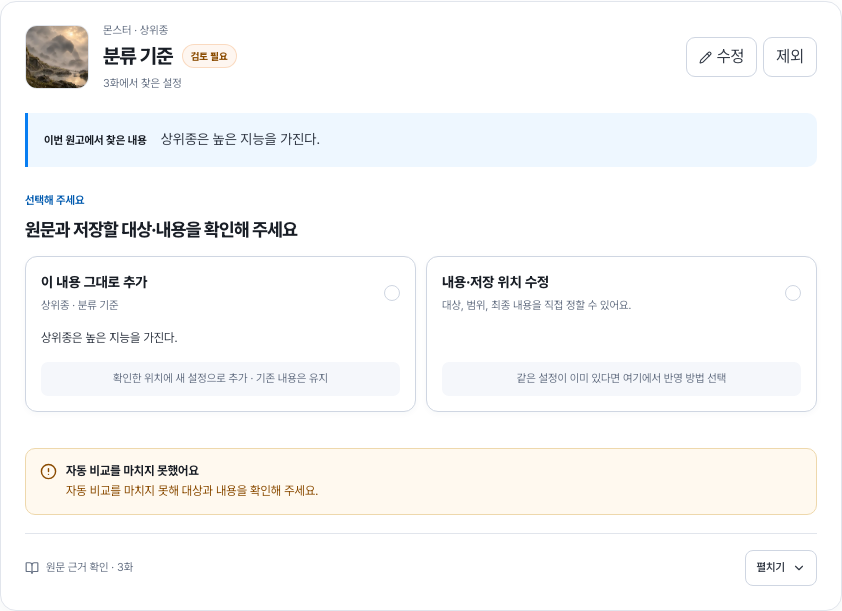
기존 범위에 포함되는 내용인가요?실제 로컬 Spring 서버 · 선택한 병합값을 저장하고 그룹 확정 후 현재값까지 확인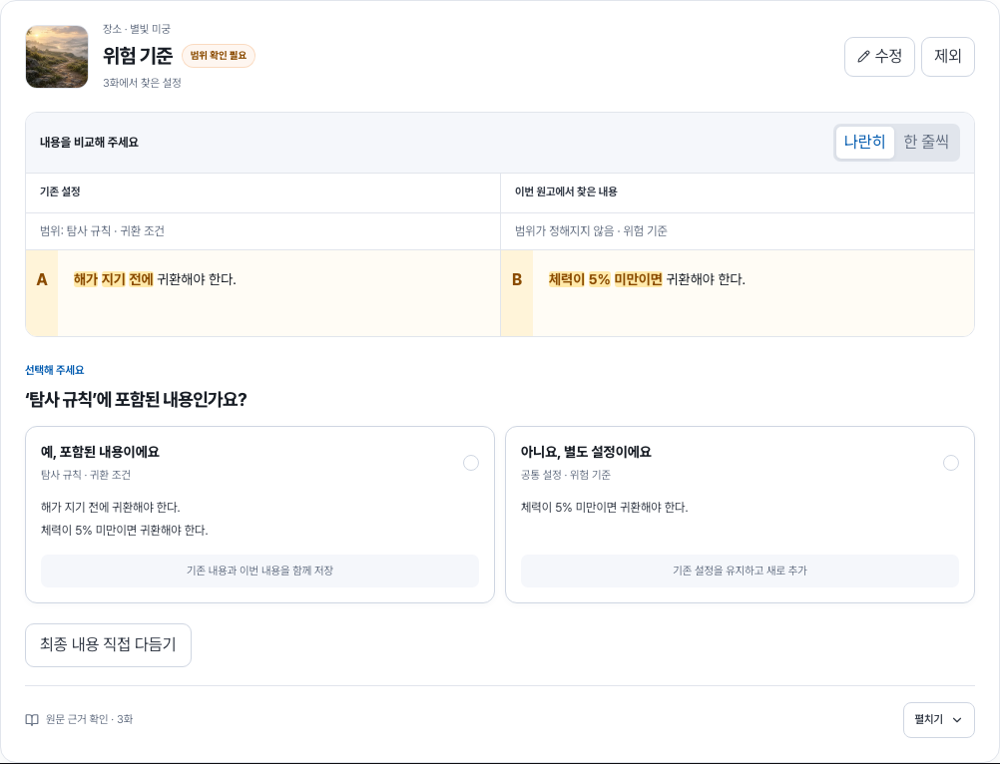
기존 내용과 무엇이 달라지나요?10월 3일 조작 정리 · 연결 변경·수정·제외는 제목 옆에, 반복 확정 안내와 하단 연결 행은 제거 · 상태별 목 API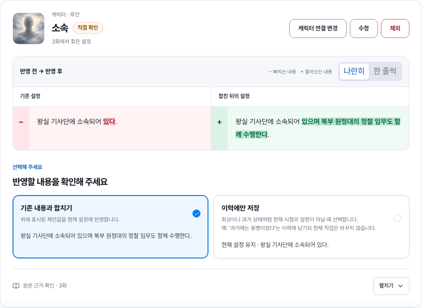
누구에 관한 내용인가요?실제 로컬 Spring 서버 · 저장된 인물 목록에서 선택하거나 새 인물로 연결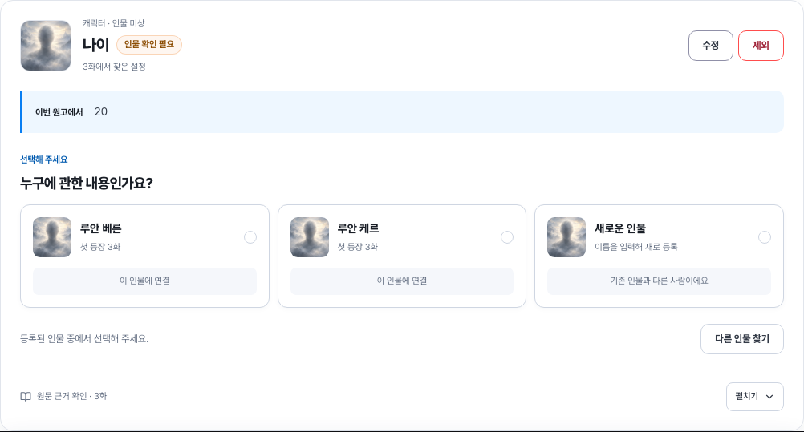
현재 설정인가요, 이력인가요?실제 로컬 Spring 서버 · 선택한 초안을 서버에 저장하고 새로고침 뒤 복원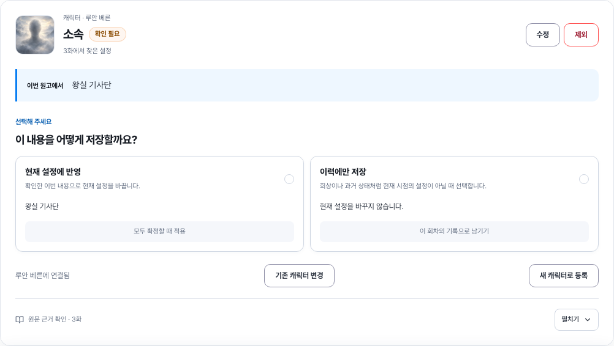
좁은 화면의 대상 선택320px · 실제 로컬 서버의 등록된 인물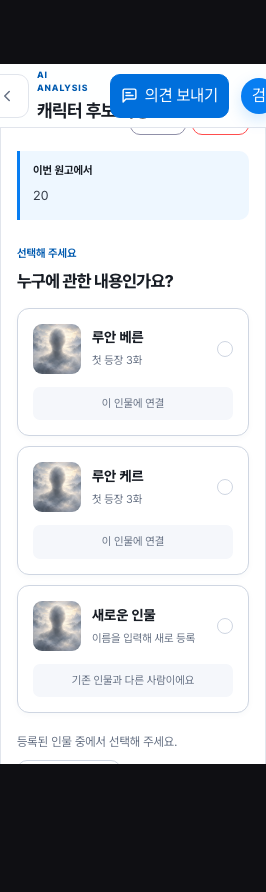
좁은 화면의 내용 비교320px · 상태별 목 API · 기존값 다음에 반영값 표시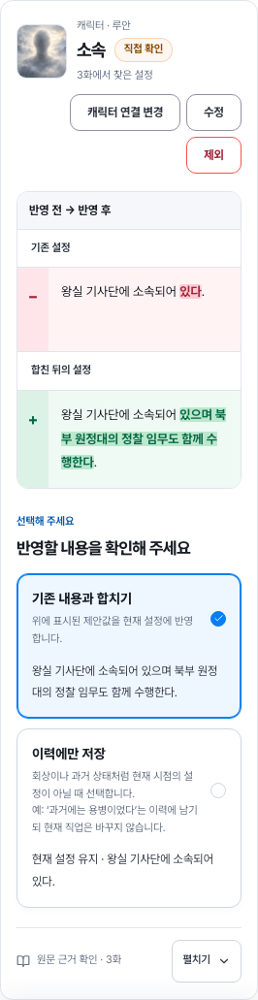
랜딩의 캐릭터 검토 예시사진과 변경 전후를 실제 검토 컴포넌트로 표시 · 예시 버튼은 조작하지 않음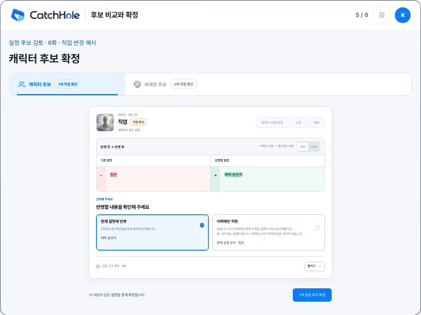
랜딩의 세계관 검토 예시신규 설정은 새 내용만 표시 · 기존값 없음 칸 제거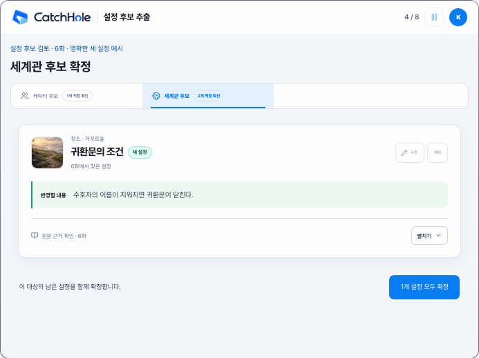
로그인 없이 체험하기공통 컴포넌트로 바뀐 캐릭터 비교 · 체험 상태는 메모리에만 유지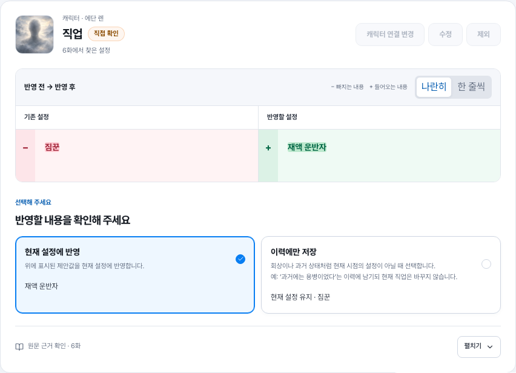
체험에서도 같은 화면에서 수정세계관 최종 내용을 바로 다듬고 묶음 확정 · 실제 작품에 저장하지 않음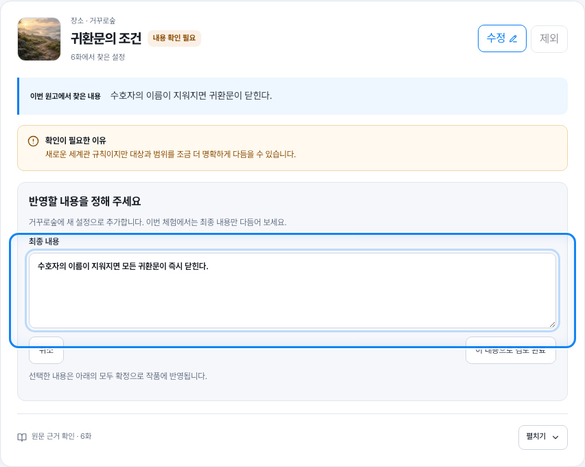
첫 업로드 · 모든 설정 직접 검토5단계 안내 중 2단계 · 실제 컴포넌트의 변경 전후 예시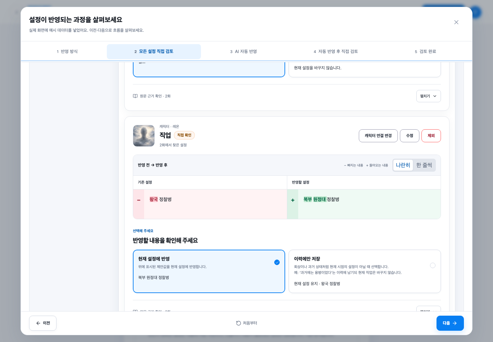
첫 업로드 · 자동 반영 후 직접 검토5단계 안내 중 4단계 · 모호한 인물만 선택하는 과정을 읽기 전용으로 표시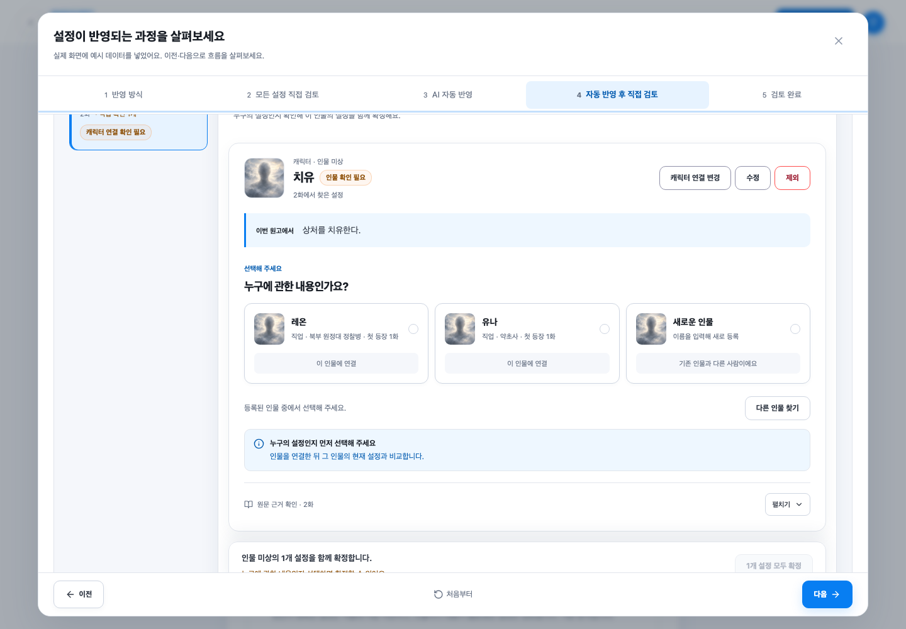